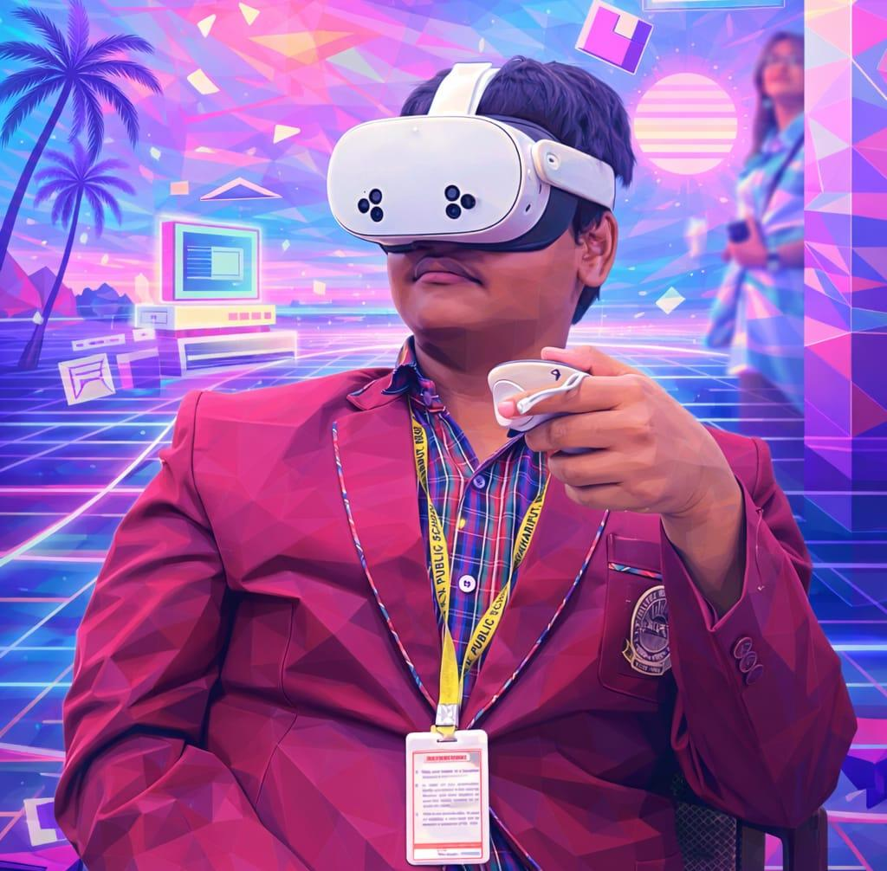
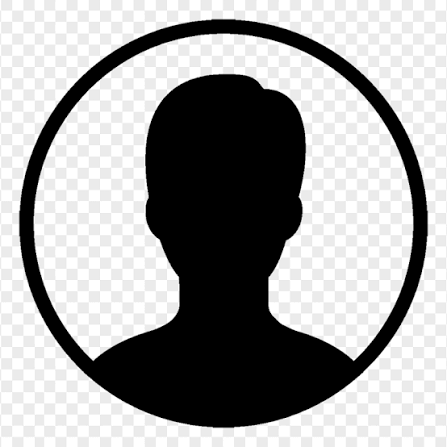

Lightweight Desktop
A minimal desktop environment with low background CPU and memory usage, tuned for older hardware.
Lightweight, fast, reliable
A minimal operating system that keeps old machines alive.

We built InvictusOS for a simple reason: Modern operating systems are too bloated to run on old computers. We wanted to revive the old computers so that they can perform at least basic tasks instead of ending up as e-waste. Our goal was to stay as fast and responsive as possible to deliver an efficient user experience.
We have designed InvictusOS to be as light as possible, with minimal background processes. It just has the essentials to keep it usable, including some other apps that might be useful for our users.
InvictusOS is currently being actively developed and it keeps getting better and better.
A minimal desktop environment with low background CPU and memory usage, tuned for older hardware.
Full support for legacy 32-bit machines.
A 64-bit edition for low-end machines that can still benefit from InvictusOS.
A graphical installer that makes setting up InvictusOS XIPHOS simple.
A settings and factory reset menu for InvictusOS XIPHOS.
A custom Linux kernel tuned for older hardware and low memory use.
Idea to execution
We, a group of students, started building InvictusOS to try to revive an old laptop. This then turned into a project which we are iterating on.
Over time, through trials, errors and testing, the first version focused on speed and compatibility was built.
The current Sagaris release marks the first version of InvictusOS. It brings together all our work into a single build, and this is just the first step for what we have planned.
Built by a student team aiming to keep old PC's alive.

Lead OS Developer

Visual Design

OS Development & Testing

Content & Socials

Web & Testing
Stay connected with the project.